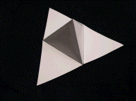
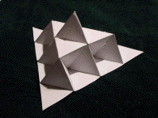
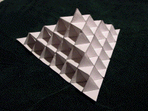

| Make 18 copies of the template sheet and cut out each pattern on the eighteen sheets to give a total of 36 cut out patterns. |
| Follow these steps with each of the 36 cut out patterns. |
| Fold back along segment AB so the back of vertex E coincides with the back of vertex D. See it here. |
| Fold back along segment AC so the back of vertex F coincides with the back of vertex D. See it here. |
| Fold forward along segment GB so vertex E meets vertex A. See it here. |
| Fold forward along segment HC so vertex F meets vertex A. See it here. |
| Fold forward along segment BC so vertex D meets vertex A. See it here. |
| Fold the creased template so that edge AG coincides with edge AH; G meeting H. See it here. |
| Tape the edges AG and AH together. |
| This forms a face of a stage 1 Koch Tetrahedron. We shall call this a stage 1 face. |
 |
| Repeat these steps for all thirty-six patterns. | |
| This shape has six congruent equilateral triangles. Think of replacing each of these triangles with one of the stage 1 faces just made. | |
| Take six of the stage 1 faces and tape them together so they are in the same relative positions as the six triangles of a stage 1 face. | |
| This produces a stage 2 face. |  |
| Once again take six of these stage 2 faces and tape them together in the same relative position as the six triangles of the stage 1 face. | |
| This produces a stage 3 face. |  |
Return to Koch Tetrahedron Lab.